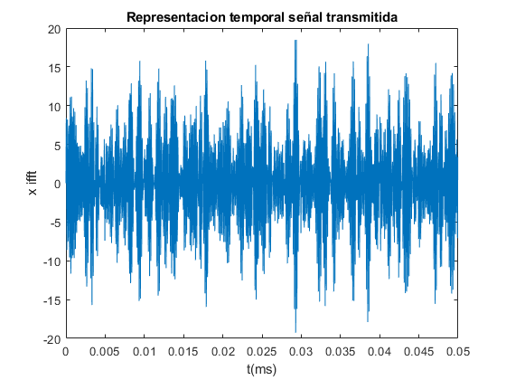
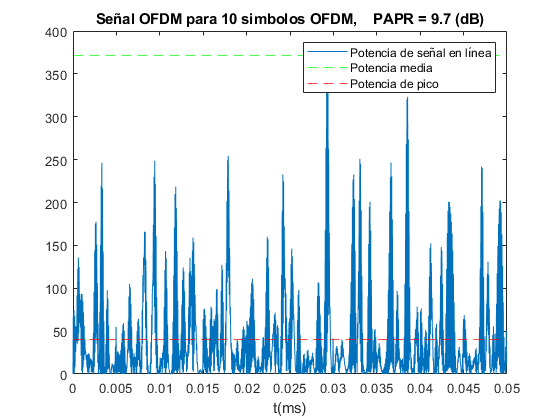
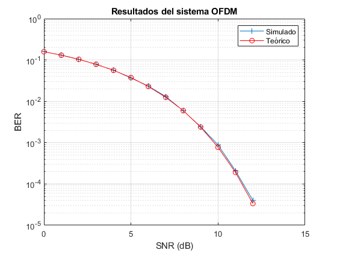
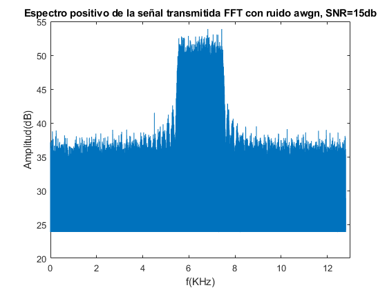

MULTIPLEXACION POR DIVISION EN FRECUENCIAS ORTOGONALES (OFDM)
Maria José Medina y Teresa González
Contents
Ejercicio 3
Definición del sistema
clear; close all, format compact
En esta práctica se implementa un sistema OFDM con 10 subportadoras separadas 200Hz y 128 puntos de NFFT. Se modula y demodula en QPSK (4 niveles). Se simula el canal como uno real con awgn.
NFFT = 128; % Tamaño de la FFT df = 200; % Separación entre portadoras Fs = NFFT*df; % Frecuencia de muestreo Nf = 10; % Numero de portadoras con datos m_ary = 4; % Indicador de modulacion digital de cada portadora % SNR =0:1:20; % Vector de relaciones SNR en el canal
Generación de los bits a transmitir. Han de ser un multiplo entero de log2(m_ary)*Nf. Se elige un número de símbolos de OFDM de 10000 y se crea un vector de bits aleatorio de tamaño el número de bits/símbolo (4 niveles*10 portadoras)*10000 símbolos.
Nofdm = 10000; % Número de símbolos OFDM txbits = round(rand([1,log2(m_ary)*Nofdm*Nf])); % Generación de símbolos complejos resultantes de la modulación en QPSK. Se recomienda, aunque no es estrictamente necesario, que los símbolos se agrupen en una matriz de Nf filas y Nofdm columnas mod = moduladorQPSK(txbits); mod = reshape(mod, [Nf, Nofdm]);
Modulación OFDM
La modulación OFDM se implementa realizando la transformada inversa de Fourier de una matriz X, que se obtiene de los símbolos complejos a la salida del modulador QPSK, tal como se describe en la teoría. A X se le denomina matriz de coeficientes espectrales, y su dimensión es NFFT filas por Nofdm columnas
Creación de la matriz X, de componentes espectrales, para la IFFT
Incialización a cero
X = zeros(NFFT, Nofdm); % % Asignación de los símbolos moduladores al espectro positivo X(29:38,:) = mod; % % Asignación de los símbolos moduladores en orden inverso y conjugados al espectro negativo. Describa lo que realiza la función flipud.
La función flipud (flip array up to down) se utiliza para invertir el orden del vector X. Con esto se calculan los conjugados de las posiciones 29:38, y se asignan a las posiciones N-1-K correspondientes para construir el vector de coeficientes FFT de 128 puntos.
X(NFFT/2+2:NFFT,:) = flipud(conj(X(2:NFFT/2,:))); % Generación del vector de muestras temporales reales x como resultado de la modulación OFDM. Léase la documentación de las funciones IFFT y FFT de MATLAB % % Señal transmitida, que tiene que ser real.
Las funcion ifft de Matlab no multiplica por el número de muestras como se debería hacer de forma teórica, por lo que se añade manualmente.
x = ifft(X, NFFT, 'symmetric')*NFFT; % % En esta práctica no se añade prefijo cíclico % % % Transformación de x en un vector fila % x = reshape(x, [], 1); % % % Representación de gráficas temporales % % % % Represente dos gráficas temporales. En la primera se debe representar la señal x durante un intervalo de tiempo correspondiente a varios símbolos OFDM, a elegir por el alumno. En la segunda represente la variación de la potencia en función del tiempo, superponiendo sobre la gráfica las rectas de potencia media y potencia de pico en ese intervalo de tiempo. Calcule el PAPR en dB e indique su valor en el título de la gráfica. figure; % Cálculo Ts y Tsimb según la teoría. Ts=1/Fs; Tsimb=NFFT*Ts; % Vector temporal correspondientes al periodo de 10 símbolos. t=0:Ts:10*Tsimb-Ts; plot(t,x(1:10*NFFT)) xlabel('t(ms)'); ylabel('x ifft'); title('Representacion temporal señal transmitida');
En esta gráfica se representa la señal a transmitir en el dominio del tiempo (10Tsímbolo). Las amplitudes corresponden a los valores de la ifft de los coeficientes NFFT de los símbolos QPSK generados anteriormente.
% representación de la variación temporal de la potencia, superponiendo las rectas que indican la potencia media y la de pico. % potencia elemento a alemento P= x.^2; Pmedio=mean(P(1:10*NFFT)); Ppico=max(P(1:10*NFFT)); papr_dB =10*log10(Ppico/Pmedio);
En esta gráfica se representa la variación temporal de la potencia de la señal transmitida. Además, se superponen las rectas correspondientes a la potencia media y la potencia de pico.
figure plot(t,P(1:10*NFFT)); hold on; yline(Ppico, 'g--'); yline(Pmedio, 'r--'); xlabel('t(ms)'); legend('Potencia de señal en línea', 'Potencia media', 'Potencia de pico'); title(['Señal OFDM para 10 simbolos OFDM, PAPR = ' num2str(round(papr_dB,1)), ' (dB)']);
Se calcula el PAPR(db) como la relacion entre la P maxima de la señal (pico) y la Pmedia. Se puede observar este valor es muy próximo a k (10 portadoras). La mayor desventaja de OFDM es que el valor de PAPR es aproximadamente el número de portadoras, y para conseguir velocidades muy altas se necesitan un número elevado. Se requiere una linealidad de A*K en los amplificadores utilizados, lo que es muy complicado de conseguir en la práctica. Sin embargo, como los picos son de muy corta duración, se pueden utilizar técnicas de corrección.
Canal
BER = [];
% Cálculo del factor de ancho de banda.
fb = 10*log10( (NFFT/2)/Nf );
El factor de ancho de banda (fb) es la relación entre el BW disponible (parte + del espectro) y el BW que ocupan las portadoras, es decir, cuanto BW del total se utiliza para enviar la información.
% Se abre bucle de SNR: % Se añade ruido awgn para conseguir el SNR deseado sobre la banda de Nf subportadoras for SNR_k = SNR
y = awgn(x,SNR_k-fb,'measured');
La funcion awgn de Matlab genera ruido con densidad espectral uniforme, aplicando el mismo SNR al BW completo de la señal de entrada (x). La potencia de la señal de entrada se localiza en el ancho de banda ocupado por las portadoras, que son las frecuencias a las que se transmite la información (siendo el resto de amplitudes=0). Por esto, se resta el fb al SNR (db), que equivale a dividir la potencia de la señal de entrada entre la parte de BW total que se utiliza para transmitir la información.La SNR resultante es menor, ya que solo tenemos en cuenta una parte del BW total.
RX
En el receptor se realiza una demodulación OFDM para obtener los simbolos recibidos. La demodulación es el proceso inverso a la modulación, básicamente se realizará una FFT de la señal recibida.
% Transformación del vector y en una matriz de NFFT filas y Nofdm columnas y = reshape(y, [NFFT, Nofdm]); % Implementación de la FFT para demodular la señal OFDM.
De nuevo la función fft de Matlab no modifica la amplitud a partir del número de puntos de NFFT, por lo que se hace manualmente para que coincida con la fórmula teórica.
Y = fft(y,NFFT)/NFFT;
%Demodulación DQPSK
demod=reshape(Y(29:38,:), 1, []);
rxbits= demoduladorQPSK(demod);
Tras obtener el vector con los coeficientes FFT, se demodula en QPSK la parte del vector correspondiente a la información transmitida (posiciones de las 10 portadoras)
Para calcular la BER, se calcula el número de bits erróneos (suma de la diferencia entre bit recibido y el transmitido) y se dividen entre el número de bits totales.
BER= [BER sum(abs(txbits-rxbits))/length(txbits)]; % Cálculo de BER % Se cierra bucle de SNR
end
Curvas de BER
Para el cálculo de BER vs SNR en QPSK
gamma = 10.^((SNR-3)/10); BERTeo = qfunc(sqrt(2*gamma)); BERTeo(find(BERTeo<1e-5)) = NaN;
Se calcula la BER teórica y se desprecia aquellos valores < $10^{-15}
% Representacion BER vs BER teorica figure semilogy(SNR, BER, '-+'); hold on; semilogy(SNR, BERTeo, '-rO'); legend('Simulado','Teórico') xlabel('SNR (dB)'); ylabel('BER') grid on title('Resultados del sistema OFDM') xlim([0 15])
Como se puede observar en la gráfica, la BER coincide con la BER teórica desde valores de SNR pequeños (de 0 a 10db), siendo entre 10 y 12 db una diferencia mínima (orden de 2*10^-4). Esta simulacion de OFDM es un caso ideal, en el que no se contempla propagación multitrayecto, en la que OFDM es muy robusta ante distorsiones de la señal mediante la técnica de prefijo cíclico. En el caso de propagación multitrayecto, si se comparase la BER con otros tipos de modulación, la BER menor correspondería a OFDM.
Representación espectral
%Para una relación señal ruido de 15 dB en la banda donde hay señal, represente el espectro real de la señal en línea, en dB, únicamente frecuencias positivas, lo que se vería en un analizador de espectros. El eje de frecuencias debe estar marcado en KHz. % Añadimos awgn con SNR=15. y = awgn(x,15-fb,'measured');
FFT de la señal con ruido. Obtenemos espectro de amplitudes, ajustando la amplitud a la fórmula teórica. Utilizamos Nofdm=10000 símbolos OFDM, que son los que queremos representar. El vector Y por tanto tiene longitud =NFFT*Nofdm.
Y = fft(y,NFFT*Nofdm)/NFFT;
El intervalo temporal de análisis NFFT*Ts*Nofdm = Nofdm/df El rango de frecuencias de análisis = df/Nofdm. Hay más resolución a mayor número de símbolos. Las portadoras están muy juntas (multiplexación en frecuencia).
% Vector de frecuencias a representar (parte + del espectro, nos quedamos con NFFT/2), con Nofdm=10000 y paso df (distancia entre portadoras).
frec=(1:1:Nofdm*NFFT/2)*df/Nofdm;
Nos quedamos con la parte positiva del espectro total de la FFT (vector Y), ya que sabemos que en el espectro - se encuentran los conjugados de los coeficientes FFT de la parte +(de 0 a NFFT/2). Vector de amplitudes de la señal FFT en db.
XdB = 20*log10(abs(Y(1:Nofdm*NFFT/2))); % Limitación del margen dinámico XdB(find(XdB<max(XdB)-30)) = max(XdB)-30; %Representacion en frecuencia (Khz) figure; plot(frec/10^3, abs(XdB)); title('Espectro positivo de la señal transmitida FFT con ruido awgn, SNR=15db'); xlabel('f(KHz)'); ylabel('Amplitud(dB)'); xlim([0,13]);
Como se puede observar en la gráfica, pese al ruido (SNR=15), se aprecia claramente el rango de frecuencias donde se encuentra la información (mayor amplitud,>50 db). Este rango de frecuencias corresponde al BW ocupado por las portadoras para transmitir los Nofdm símbolos totales. Se observa cómo este rango de frecuencias va de 5.8 Khz (29*200hz, k=1) a 7.6 Khz (38*200Hz, k=10), coinciciendo así con el BW teórico. También se puede apreciar los lóbulos laterales de las portadoras a los extremos (espectro sinc en QPSK).